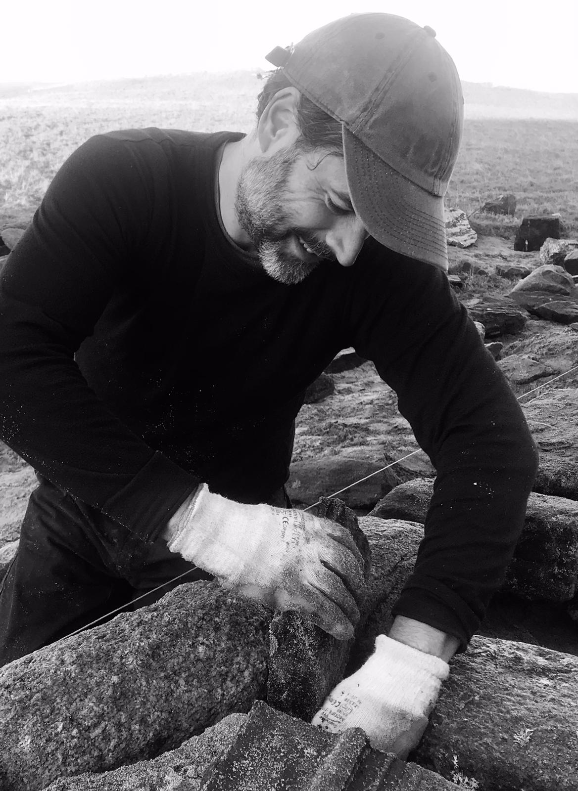

New Build and Repairs around Wester Ross and North Uist
-
Based in Gairloch in Wester Ross.
-
Wide range of jobs covered from small repairs to lage new build projects.
-
Public liability insurance up to £5,000,000
About
I am a dry stone walling contractor living and working in the Gairloch area. I prioritise using local materials and working with the form of the stone as it comes rather than cutting and splitting.
Recent work has included rebuilding a collapsed wall to incorporate a new gate, building a new raised bed, repairs to various collapsed walls, a new retaining wall for a sheltered seating area, repairs to a damaged byre... Feel free to get in touch if you have a project.
I work regularly with Hebridean Thatching on new build and repair projects, using traditional skills to build modern sustainable buildings.
I am also available for training, having worked with Grimsay Community Association and National Trust for Scotland delivering workshops and training sessions.
Contact:
e: neil.j.davidson@gmail.com
m: 07989 165 529

Copyright © Neil Davidson 2024 - All Rights Reserved